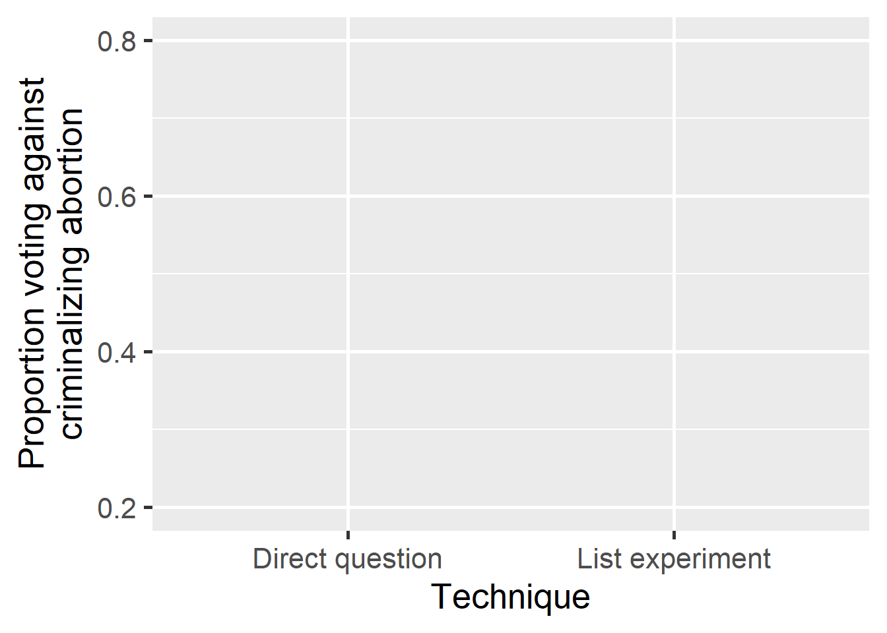
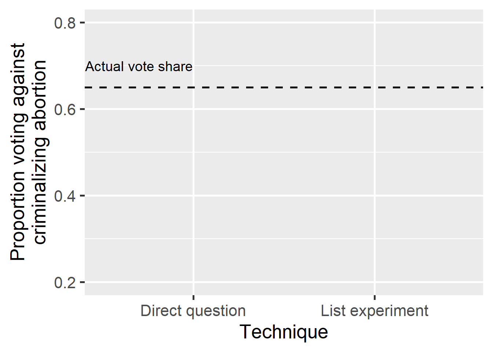
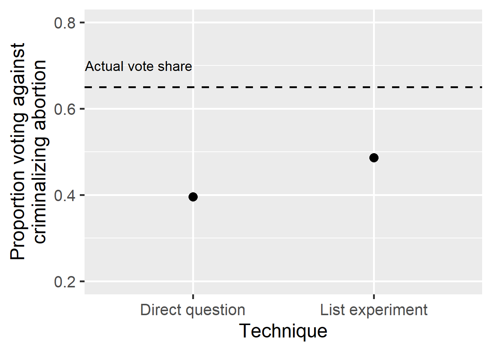
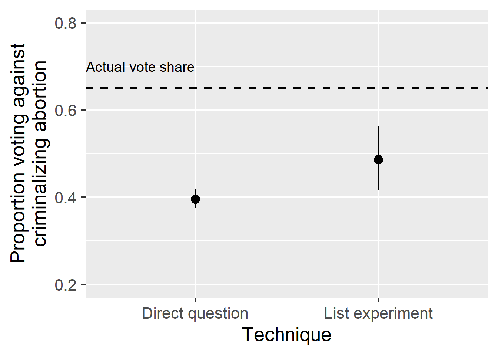
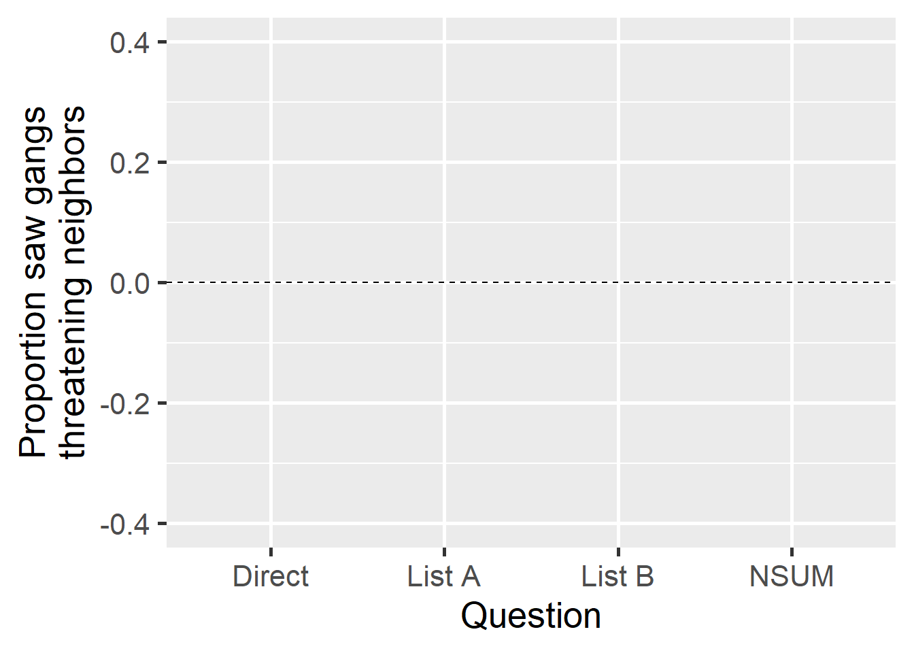
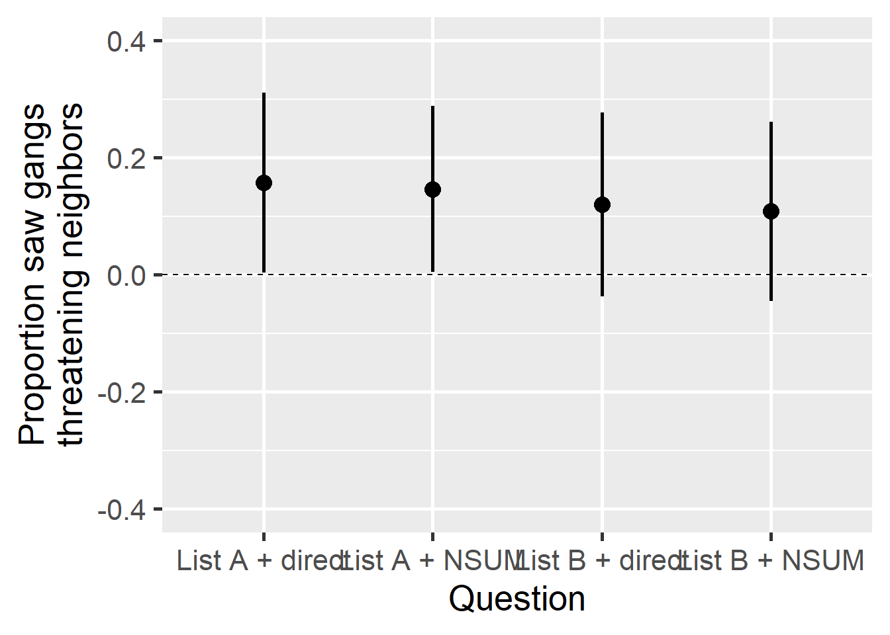

Combining List Experiments and the Network Scale Up Method
Gustavo Díaz
McMaster University
diazg2@mcmaster.ca
@gusvalo
Verónica Pérez Bentancur
Universidad de la República veronica.perez@cienciassociales.edu.uy
@veroperezben
Ines Fynn
Pontificia Universidad Católica de Chile
ifynn@uc.cl
@ifynn_
Lucía Tiscornia
University College Dublin
lucia.tiscornia@ucd.ie
@tiscornia21
Slides: gustavodiaz.org/talk
Background
Social scientists care about sensitive issues
Asking about them directly leads to misreporting
Solution: Indirect questioning techniques
List experiments popular in political science
Example
Now I am going to read you things that make people angry or upset
Adapted from Kuklinski, Cobb, and Gilens (1997)
Example
After I read them all, tell me HOW MANY of them upset you
Adapted from Kuklinski, Cobb, and Gilens (1997)
Example
I don’t want to know which ones, just tell me HOW MANY
. . .
Control group
- The federal government increasing tax on gasoline
- Professional athletes getting million dollar contracts
- Large corporations polluting the environment
Adapted from Kuklinski, Cobb, and Gilens (1997)
Example
I don’t want to know which ones, just tell me HOW MANY
Treatment group
- The federal government increasing tax on gasoline
- Professional athletes getting million dollar contracts
- Large corporations polluting the environment
Adapted from Kuklinski, Cobb, and Gilens (1997)
Example
I don’t want to know which ones, just tell me HOW MANY
Treatment group
- The federal government increasing tax on gasoline
- Professional athletes getting million dollar contracts
- Large corporations polluting the environment
- A black family moving next door
Adapted from Kuklinski, Cobb, and Gilens (1997)
Reduce bias but increase variance
Adapted from Rosenfeld, Imai, and Shapiro (2016)
Reduce bias but increase variance

Adapted from Rosenfeld, Imai, and Shapiro (2016)
Reduce bias but increase variance

Adapted from Rosenfeld, Imai, and Shapiro (2016)
Reduce bias but increase variance

Adapted from Rosenfeld, Imai, and Shapiro (2016)
Ways to reduce variance
Negatively correlated items (Glynn 2013)
Covariate adjustment (Blair and Imai 2012)
Auxiliary information (Chou 2020)
Double list experiments (Diaz 2023)
Combine with direct questions (Aronow et al 2015)
Ways to reduce variance
Negatively correlated items (Glynn 2013)
Covariate adjustment (Blair and Imai 2012)
Auxiliary information (Chou 2020)
Double list experiments (Diaz 2023)
Combine with direct questions (Aronow et al 2015)
Combined estimator
- Logic: You don’t need a list experiment for those who openly confess to the sensitive item
. . .
\[ \hat{\mu} = \overline{Y} + (1 - \overline{Y}) (\overline{V}_{1,0} - \overline{V}_{0,0}) \]
\(\overline{Y}\): Proportion confess in direct question
\((\overline{V}_{1,0} - \overline{V}_{0,0})\): List experiment estimate among those not confessing
Source: Aronow et al (2015)
Problem
Can’t always include direct questions
Need an indirect questioning technique that lets us infer individual responses to sensitive item
But most rely on anonymity
Can’t combine without extra assumptions or altered designs (e.g. Blair, Imai, and Lyall 2014)
Network Scale-Up Method (NSUM)
. . .
How many people do you know,
Adapted from McCarty et al (2001). Original has 29 anchors and 3 target groups
Network Scale-Up Method (NSUM)
How many people do you know, who also know you,
Adapted from McCarty et al (2001). Original has 29 anchors and 3 target groups
Network Scale-Up Method (NSUM)
How many people do you know, who also know you, with whom you have interacted in the last year
Adapted from McCarty et al (2001). Original has 29 anchors and 3 target groups
Network Scale-Up Method (NSUM)
How many people do you know, who also know you, with whom you have interacted in the last year in person, by phone, or any other channel.
- Named Michael
- Named Christina
- Gave birth in the past 12 months
- Commercial pilots
- Have tested positive for HIV
Adapted from McCarty et al (2001). Original has 29 anchors and 3 target groups
Why NSUM?
. . .
- Can infer individual responses to sensitive item
. . .
Assumption
If someone knows a unusually large number of people with the sensitive item, then they are likely to hold the sensitive item too.
. . .
- If true, can use NSUM responses instead of direct questions
. . .
- Goal: Find individuals with large sensitive network relative to personal network
Hierarchical model
\[ \begin{align*} y_{ik} \sim \text{negative-binomial}( & \text{mean} = e^{\alpha_i + \beta_k},\\ & \text{overdispersion} = \omega_k) \end{align*} \]
\(y_{ik}\): Degree of group \(k\) for person \(i\)
\(\alpha_i\): Expected degree of person \(i\) (logged)
\(\beta_k\): Expected degrees of group \(k\) (logged)
\(\omega_k\): Controls variance in propensity to know someone from group \(k\)
Hierarchical model
Fit with MLE in two steps
(Personal network, sensitive group network)Focus on standardized residuals:
\[ r_{ik} = \sqrt{y_{ik}} - \sqrt{e \alpha_i + \beta_k} \]
. . .
- High residual: Higher exposure to sensitive item
Details: Ventura, Ley, and Cantú (2023)
Application
Criminal governance strategies in Uruguay
Low crime, but embedded
Even here criminal organizations replace government
Fieldwork: Interactions are sensitive topic
Goal: Document extent of exposure to criminal governance strategies
(positive, negative)
Survey
Facebook sample of Montevideo residents
(N = 2688)Four criminal governance strategies
. . .
Negative
- Threaten neighbors
- Evict neighbors
Positive
- Make donations to neighbors
- Offer jobs to neighbors
Treatments based on qualitative evidence from fieldwork (Pérez Bentancur and Tiscornia 2022)
Survey
Facebook sample of Montevideo residents
(N = 2688)Four criminal governance strategies
Negative
- Threaten neighbors
- Evict neighbors
Positive
- Make donations to neighbors
- Offer jobs to neighbors
Treatments based on qualitative evidence from fieldwork (Pérez Bentancur and Tiscornia 2022)
Direct question
During the last six months, in your neighborhood, have you seen gangs…
- Threaten neighbors
- Evict neighbors
- Make donations to neighbors
- Offering jobs neighbors
- Blackmail neighbors
- Blackmail businesses
- Pay a neighbor’s phone or electricity bills
List experiments
Things people have experienced in the last six months:
| List A | List B |
|---|---|
| Saw people doing sports | Saw people playing soccer |
| Visited friends | Chatted with friends |
| Activities by feminist groups | Activities by LGBTQ groups |
| Went to church | Went to charity events |
List experiments
Things people have experienced in the last six months:
| List A | List B |
|---|---|
| Saw people doing sports | Saw people playing soccer |
| Visited friends | Chatted with friends |
| Activities by feminist groups | Activities by LGBTQ groups |
| Went to church | Went to charity events |
| Did not drink mate | Gangs threatening neighbors |
List experiments
Things people have experienced in the last six months:
| List A | List B |
|---|---|
| Saw people doing sports | Saw people playing soccer |
| Visited friends | Chatted with friends |
| Activities by feminist groups | Activities by LGBTQ groups |
| Went to church | Went to charity events |
| Gangs threatening neighbors | Did not drink mate |
NSUM
How many people do you know, who also know you, with whom you have interacted in the last year in person, by phone, or any other channel
. . .
15 reference groups + sensitive item
Choice range 0-10+
Recode as 1 if \(r_{ik} > \text{mean}(r_{ik}) + 1 \text{SD}\), 0 otherwise
See list of groups here
Single-question estimates

Single-question estimates

Combined estimates

Standard errors
| Estimator | List A | List B |
|---|---|---|
| List | 0.086 | 0.088 |
| List + direct | 0.078 | 0.080 |
| List + NSUM | 0.073 | 0.078 |
Conclusion
Can use NSUM to improve precision of list experiment estimates
Logic applies to other indirect questioning techniques that rely on anonymity
Questions
More principled approach to infer who holds the sensitive item from NSUM questions?
What would you like to see to be convinced that NSUM is a suitable replacement for direct questions?
NSUM groups
From Las Piedras
Male 25-29
Police officers
University students
Had a kid last year
Passed away last year
Married last year
Female 45-49
Public employees
Welfare card holders
Registered with party
With kids in public school
Did not vote in last election
Currently in jail
Recently unemployed [Sensitive item]